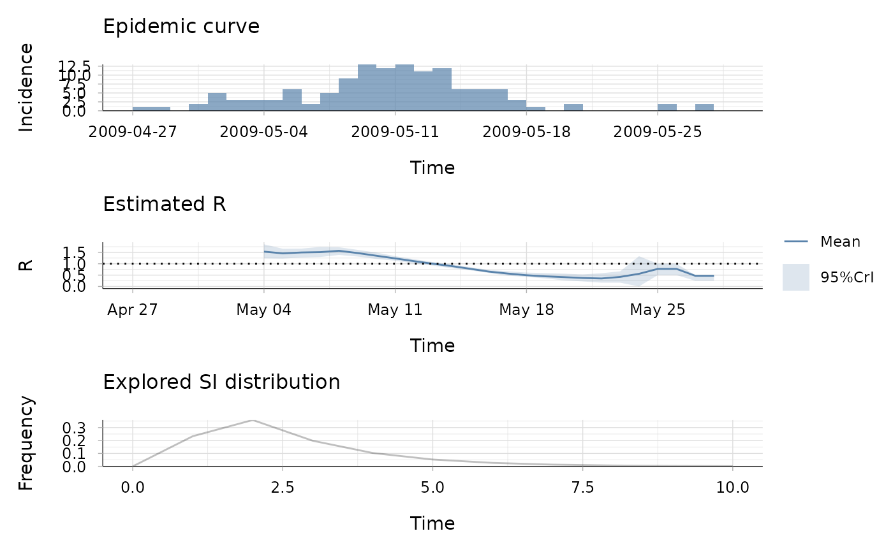

Estimate case reproduction number using the Wallinga and Teunis method
Source:R/wallinga_teunis.R
wallinga_teunis.RdEstimate the case reproduction number of an epidemic, given the incidence
time series and the serial interval distribution. wallinga_teunis() is a
generic function with S3 methods for classes: integer, numeric,
data.frame, incidence, incidence2.
Usage
wallinga_teunis(incid, ...)
# Default S3 method
wallinga_teunis(incid, ...)
# S3 method for class 'numeric'
wallinga_teunis(
incid,
method = c("non_parametric_si", "parametric_si"),
config,
...
)
# S3 method for class 'integer'
wallinga_teunis(
incid,
method = c("non_parametric_si", "parametric_si"),
config,
...
)
# S3 method for class 'data.frame'
wallinga_teunis(
incid,
method = c("non_parametric_si", "parametric_si"),
config,
count = "I",
...
)
# S3 method for class 'incidence'
wallinga_teunis(
incid,
method = c("non_parametric_si", "parametric_si"),
config,
quiet = FALSE,
...
)
# S3 method for class 'incidence2'
wallinga_teunis(
incid,
method = c("non_parametric_si", "parametric_si"),
config,
quiet = FALSE,
...
)Arguments
- incid
An incidence time series provided as:
a non-negative
integervectora non-negative
numericvectora
data.framewith a column namedIby default (see argument 'count') containing incidence; if the data.frame contains a columndates, this is used for plottingan
incidenceobject as returned byincidence::incidence()an
incidence2object as returned byincidence2::incidence()
- ...
further arguments to be passed to S3 methods.
- method
the method used to estimate R, one of "non_parametric_si" or "parametric_si"
- config
a list with the following elements:
t_start: Vector of positive integers giving the starting times of each window over which the reproduction number will be estimated. These must be in ascending order, and so that for alli,t_start[i] <= t_end[i].t_start[1]should be strictly after the first day with non null incidence.t_end: Vector of positive integers giving the ending times of each window over which the reproduction number will be estimated. These must be in ascending order, and so that for alli,t_start[i] <= t_end[i].method: One of "non_parametric_si" or "parametric_si" (see details).mean_si: For method "parametric_si"; positive real giving the mean serial interval.std_si: For method "parametric_si"; non negative real giving the standard deviation of the serial interval.si_distr: For method "non_parametric_si"; vector of probabilities giving the discrete distribution of the serial interval, starting withsi_distr[1](probability that the serial interval is zero), which should be zero.n_sim: A positive integer giving the number of simulated epidemic trees used for computation of the confidence intervals of the case reproduction number (see details).seed: A random seed used to enable full reproducibility.
- count
An
integerorcharacterindicating the column of thedata.framecontaining counts; defaults to "I"- quiet
A
logicalindicating if warnings should be issued when relevant. Defaults toFALSE.
Value
a list with components:
R: a dataframe containing: the times of start and end of each time window considered; the estimated mean, std, and 0.025 and 0.975 quantiles of the reproduction number for each time window.si_distr: a vector containing the discrete serial interval distribution used for estimationSI.Moments: a vector containing the mean and std of the discrete serial interval distribution(s) used for estimationI: the time series of total incidenceI_local: the time series of incidence of local cases (so thatI_local + I_imported = I)I_imported: the time series of incidence of imported cases (so thatI_local + I_imported = I)dates: a vector of dates corresponding to the incidence time series
Details
Estimates of the case reproduction number for an epidemic over
predefined time windows can be obtained, for a given discrete distribution of
the serial interval, as described by Wallinga and Teunis (AJE, 2004).
Confidence intervals are obtained by simulating a number (config$n_sim) of
possible transmission trees (only done if config$n_sim > 0).
Note the method implemented here is as described in Wallinga and Teunis
(AJE, 2004), and in particular does not implement additional features such as
correcting for right censoring as proposed by Cauchemez et al. (AJE 2006).
Methods
The methods vary in the way the serial interval distribution is specified.
method = "non_parametric_si"
The discrete distribution of the serial interval is directly specified in the
argument config$si_distr.
method = "parametric_si"
The mean and standard deviation of the continuous distribution of the serial
interval are given in the arguments config$mean_si and
config$std_si. The discrete distribution of the serial interval is
derived automatically using discr_si().
References
Cori, A. et al. A new framework and software to estimate time-varying reproduction numbers during epidemics (AJE 2013). Wallinga, J. and P. Teunis. Different epidemic curves for severe acute respiratory syndrome reveal similar impacts of control measures (AJE 2004).
Examples
## load data on pandemic flu in a school in 2009
data("Flu2009")
## estimate the case reproduction number (method "non_parametric_si")
res <- wallinga_teunis(Flu2009$incidence,
method = "non_parametric_si",
config = list(t_start = seq(2, 26), t_end = seq(8, 32),
si_distr = Flu2009$si_distr,
n_sim = 100,
seed = 1)
)
plot(res)
## the second plot produced shows, at each each day,
## the estimate of the case reproduction number over the 7-day window
## finishing on that day.
## estimate the case reproduction number (method "parametric_si")
res <- wallinga_teunis(Flu2009$incidence, method = "parametric_si",
config = list(t_start = seq(2, 26), t_end = seq(8, 32),
mean_si = 2.6, std_si = 1.5,
n_sim = 100,
seed = 1)
)
plot(res)

## the second plot produced shows, at each each day,
## the estimate of the case reproduction number over the 7-day window
## finishing on that day.